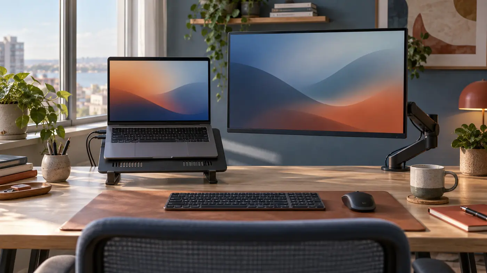

Plan the support system before comparing products
A monitor-and-laptop arm is not merely a way to lift two screens. It is a small support system attached to furniture, carrying an uneven load through pivots that users move every day. I begin with the desk edge, the equipment weights, the desired viewing positions, and the paths the arms must travel. That sequence exposes conflicts before a clamp is tightened or a return window begins to close.
Current roundups remain useful for seeing the available forms. The LeStallion review of monitor-arm and laptop-tray combinations for a dual setup is one focused place to survey options. My purpose here is different: to translate a shortlist into a desk-specific plan, with checks for structure, geometry, cooling, cabling, adjustment, and upkeep rather than naming a universal winner.
Sketch the desktop from above and from the seated side. Mark the clamp zone, wall clearance, monitor center, laptop center, keyboard, chair, power outlet, and any shelf or acoustic panel. Add the deepest position you expect and the parked position you want. A rough drawing reveals when two independent arms would cross, when a pole would land behind a cable tray, or when a laptop shelf would block the primary display.
Treat the desktop as part of the mechanism
Every load eventually reaches the desktop through a clamp, grommet, or freestanding base. A thick-looking top can still be hollow, layered, beveled, or weak near an edge. Inspect the underside instead of trusting the finish. Note aprons, steel rails, drawers, cable channels, modesty panels, and adjustable-desk crossbars that may prevent full clamp contact or leave no space for a tightening handle.
The arm creates more than downward weight. Extending a screen forward increases leverage at the mount; swinging it sideways changes the direction of that moment. A laptop tray adds a broad shelf that can tempt people to press on it while typing. The practical check is therefore about the complete load path under realistic positions, not a single weight number copied from a product page.
When a manufacturer specifies desktop thickness, equipment mass, installation orientation, or reinforcement, keep those limits together in the plan. Do not improvise with a tiny scrap that contacts only part of a clamp pad. If the desk construction is unclear, the safe decision is to get authoritative furniture information or choose a support method whose load can be understood.
Build the screen geometry around the primary task
A dual setup needs a declared center. If the external monitor carries most work, place its active area near the body midline and let the laptop sit to the side as a secondary reference. If the laptop camera and keyboard remain central, the external display may become the flanking surface. Equal visual symmetry is not automatically equal usefulness.
Choose viewing distance and height while sitting in a normal working posture, not while leaning forward to hold a screen. The top portion of each active display should be comfortably visible without repeated neck extension. Match important content areas rather than blindly matching bezels: a laptop and monitor often have different pixel density, stand height, and usable vertical area.
Write down the desired centers before installation. A tape measure from the front desk edge, a seated eye-line mark, and a target separation between displays are enough. These references let you evaluate an arm range honestly and restore the arrangement after tension changes. They also show whether a tall pole or stacked configuration is solving a real need or only creating more travel.

Check the laptop tray as a device interface
The tray meets the computer at vents, feet, ports, hinges, and retention points. Measure the laptop body rather than relying on its marketed screen size. Confirm that side stops do not press keys or ports, the front lip does not make the palm rest awkward, and the base remains supported when the display opens to its normal angle.
Cooling deserves a physical check. A tray with large openings can still cover a particular intake, while a solid shelf may trap warm exhaust near a wall or monitor. Trace where the laptop draws and releases air, then look at the shelf, any non-slip pads, and the expected lid angle. Do not remove manufacturer feet or defeat the computer’s designed clearance to force a flatter appearance.
Retention must work through the full arm motion. A lip that is adequate when level may not be enough if a joint droops or a user tilts the tray. Conversely, aggressive straps can obstruct ports or press the lid. The appropriate restraint keeps the device stable during planned adjustment without pretending the tray is safe to grab, lean on, or move by pulling the computer.
Reserve motion space, not just resting space
Adjustable arms need a three-dimensional envelope. Behind the desk they may sweep into a wall, window trim, lamp, shelf, or another arm. Above the desk, elbows can collide before the screens reach the promised positions. Underneath, a clamp screw or pole may interfere with a drawer and a cable bundle can snag on a sit-stand frame.
Move a cardboard rectangle through the likely monitor and laptop positions before buying when clearances are tight. Include the arm depth, not only the screen outline. For a height-adjustable desk, repeat the thought exercise at the lowest and highest settings and consider nearby fixed furniture. A configuration that clears a wall while seated can strike a sill after the desk rises.
Parking positions matter as much as working positions. Decide where the laptop tray goes when a notebook is removed, where the external monitor sits during handwriting, and whether the camera remains usable. If every transition requires loosening a joint or rerouting a cable, the setup will not behave like a convenient adjustable system.
Route cables as moving components
Power, video, docking, network, and peripheral cables cross joints with different bend behavior. Leave enough service loop for the farthest position, but do not create loose loops that can enter a hinge or catch a cup. Route the assembly while the arm moves slowly through its complete intended range, watching each connector rather than judging neatness from one static pose.
Place strain relief on the fixed side of a connector and preserve a gentle bend where the cable enters the plug. A heavy dock hanging from a laptop port turns movement into connector leverage. Mount or rest the dock independently when practical, and let a replaceable cable bridge the moving section. Power adapters should remain ventilated and supported rather than suspended by their leads.
Separate permanent routing from easy changeover. Clips close to the pivots can guide long-lived display and power lines; accessible hook-and-loop ties can manage a laptop cable that changes often. Avoid cinching so tightly that insulation is crushed. A visually perfect bundle that prevents full travel or transmits every adjustment into a port is not successful cable management.

Install in stages and calibrate under the real load
Stage fasteners, tools, plates, spacers, and instructions before lifting equipment. Assemble the desk interface first and verify full clamp contact. Attach plates to devices using the documented fasteners and supported pattern. If a screen must be lifted onto a quick-release head, clear the desk and use another person when its size or shape makes a controlled lift uncertain.
Tension adjustment should happen with the intended monitor and laptop in place. Support the device while changing a joint, use small increments, and observe whether the arm rises, sinks, or drifts sideways after release. “Tighter” is not a general cure: excessive friction can make normal repositioning transmit force into the desk or encourage users to pull on screen corners.
Calibrate one axis at a time. Establish pole and base stability, then vertical balance, tilt hold, lateral rotation, and final alignment. Cycle the system several times before declaring it done. Fasteners and contact pads can settle, cables can reveal a hidden tug, and a laptop lid can shift the tray’s center of mass after the first apparently stable pose.
Compare configurations by failure mode
A single pole with two heads can save clamp space and create a coherent assembly, yet the displays may share height limits or collide near the pole. Separate arms offer independent placement but consume more edge room and can compete behind the desk. A monitor arm with an attached laptop shelf may be compact, while a dedicated laptop arm can give the notebook a more useful camera angle.
| Configuration | Useful strength | Constraint to verify |
|---|---|---|
| One pole, two heads | Conserves one clamp zone; visually coherent | Head ranges can interact; shared pole limits height options |
| Separate monitor and laptop arms | Independent placement and easier specialization | Uses more edge space; rear sweeps may collide |
| Monitor arm plus attached shelf | Compact paired movement for a stable routine | Laptop and monitor may inherit coupled geometry |
| Monitor arm plus fixed laptop riser | Simple support with fewer moving joints | Laptop cannot clear the desk or reposition as freely |
Use the table to identify what must not fail: weak desk contact, insufficient arm range, unstable tray fit, poor cooling, cable strain, or slow changeover. Then verify the relevant dimensions and instructions for current products. A configuration should earn its place by resolving the named constraint without creating a worse one elsewhere.
Commission the workstation like a repeatable tool
After installation, work for a short session and note where adjustment feels natural and where it does not. Type, join a call, consult both displays, connect power, raise the desk if applicable, and clear space for paper. Observe drift, vibration, contact sounds, cable pull, blocked vents, glare, and any tendency to grasp the laptop or monitor instead of the arm’s intended handling point.
Mark useful positions discreetly: a pole-height reference, a clamp location measured from the corner, or a photograph of cable loops at the parked position. Record the equipment mass and fasteners used. These notes make later diagnosis faster and prevent a shared workstation from depending on one person’s memory.
Reinspect after several days and at sensible intervals. Look for clamp movement, compressed surfaces, loose joints, worn cable jackets, missing retention parts, and a tray that no longer sits level. Stop using an assembly that shows structural damage or cannot hold its load. Maintenance is not an admission of poor hardware; moving mechanisms need observation.
Use a decision checklist that stays tied to evidence
Before purchasing, confirm the desk structure, mount clearance, equipment weights, attachment patterns, tray dimensions, vent locations, screen centers, movement envelope, and cable lengths. Separate values supplied by manufacturers from measurements taken at the desk. Do not fill an unknown with an optimistic guess simply because a product photograph looks similar.
Before daily use, confirm that the clamp is seated, both devices are retained, ports are not carrying weight, cables travel freely, joints hold after release, and the arrangement supports the intended posture. The best combination is not the one with the most pivots. It is the one that reaches useful positions, remains understandable, and can be checked without dismantling the desk.
I would rather keep one screen in a slightly modest range than install a dramatic structure on an unsuitable edge. A clear load path, comfortable geometry, cool and stable laptop, and calm adjustment routine form the actual dual setup. The hardware list is only one part of that result.
Carry the plan to the desk
- Identify desk construction and clear, flat mounting contact.
- Record device mass, attachment pattern, laptop footprint, vents, and ports.
- Mark screen centers, working distances, motion envelope, and parked positions.
- Route every cable through full travel without connector load.
- Commission under real load and keep an inspection record.
A useful installation can be explained from desk to device and repeated after adjustment. If one link in that explanation depends on hidden damage, an unknown material, a forced cable, or an unsupported assumption, pause there. The calm decision is to resolve the interface before adding more hardware.